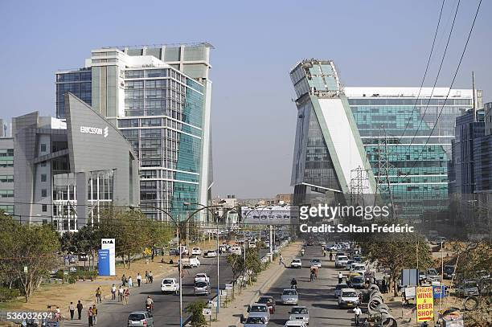
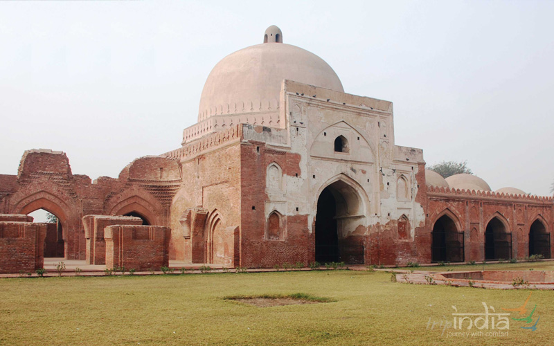

Haryana is landlocked and is surrounded by the states of Punjab to the northwest,
Himachal Pradesh to the north, Uttarakhand to the northeast,
Uttar Pradesh to the east, and Rajasthan to the south and west.
popular places in haryana

Gurgaon : A rapidly developing city in Haryana, Gurgaon is a major financial and technology hub.
It has modern infrastructure, shopping malls, entertainment complexes, and a vibrant nightlife

Panipat : Panipat is famous for three significant historical battles that took place here. There are three battlefield sites -
Panipat is often referred to as the "City of Three Battles." The three battles occurred in 1526, 1556, and 1761.
most languages used : hindi and bhojpuri food : kachori , litti chokha , chat
Additional Place in Karnataka for visit
Faridabad: Another prominent city in Haryana, Faridabad has a mix of industrial and cultural attractions. The Surajkund Crafts Mela, held annually, is a popular cultural event.
Hisar: Known for its historical significance, Hisar has several archaeological sites, including the Feroz Shah Palace Complex, Deer Park, and the Agroha Dham.
Panchkula: This city is part of the Chandigarh Tricity area and is known for its well-planned layout. The Morni Hills, located near Panchkula, offer a scenic getaway.
Yamunanagar: This city is situated on the banks of the Yamuna River and is known for its plywood and paper industries. The Kalesar National Park, located nearby, is a sanctuary for wildlife enthusiasts.
Thanesar: An ancient town near Kurukshetra, Thanesar has archaeological sites like Sheikh Chilli's Tomb and the tomb of Ibrahim Lodhi

piyush chaubey :- for hiring or about me click the link :-
Piyush portfolio
prashant dwivedi :- for hiring or about me click the link :-
Prashant portfolio
Contact us: xyz@gmail.com
© copyright reserved since 2023